It is sometimes desirable to have circuits capable of selectively filtering one frequency or range of frequencies out of a mix of different frequencies in a circuit. A circuit designed to perform this frequency selection is called a filter circuit, or simply a filter. A common need for filter circuits is in high-performance stereo systems, where certain ranges of audio frequencies need to be amplified or suppressed for best sound quality and power efficiency. You may be familiar with equalizers, which allow the amplitudes of several frequency ranges to be adjusted to suit the listener's taste and acoustic properties of the listening area. You may also be familiar with crossover networks, which block certain ranges of frequencies from reaching speakers. A tweeter (high-frequency speaker) is inefficient at reproducing low-frequency signals such as drum beats, so a crossover circuit is connected between the tweeter and the stereo's output terminals to block low-frequency signals, only passing high-frequency signals to the speaker's connection terminals. This gives better audio system efficiency and thus better performance. Both equalizers and crossover networks are examples of filters, designed to accomplish filtering of certain frequencies.
Another practical application of filter circuits is in the “conditioning” of non-sinusoidal voltage waveforms in power circuits. Some electronic devices are sensitive to the presence of harmonics in the power supply voltage, and so require power conditioning for proper operation. If a distorted sine-wave voltage behaves like a series of harmonic waveforms added to the fundamental frequency, then it should be possible to construct a filter circuit that only allows the fundamental waveform frequency to pass through, blocking all (higher-frequency) harmonics.
We will be studying the design of several elementary filter circuits in this lesson. To reduce the load of math on the reader, I will make extensive use of SPICE as an analysis tool, displaying Bode plots (amplitude versus frequency) for the various kinds of filters. Bear in mind, though, that these circuits can be analyzed over several points of frequency by repeated series-parallel analysis, much like the previous example with two sources (60 and 90 Hz), if the student is willing to invest a lot of time working and re-working circuit calculations for each frequency.
By definition, a low-pass filter is a circuit offering easy passage to low-frequency signals and difficult passage to high-frequency signals. There are two basic kinds of circuits capable of accomplishing this objective, and many variations of each one: The inductive low-pass filter in Figure below and the capacitive low-pass filter in Figure below
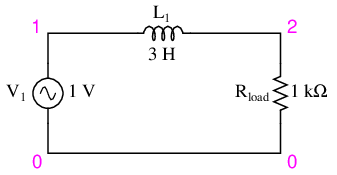
Inductive low-pass filter
The inductor's impedance increases with increasing frequency. This high impedance in series tends to block high-frequency signals from getting to the load. This can be demonstrated with a SPICE analysis: (Figure below)
inductive lowpass filter v1 1 0 ac 1 sin l1 1 2 3 rload 2 0 1k .ac lin 20 1 200 .plot ac v(2) .end
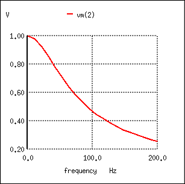
The response of an inductive low-pass filter falls off with increasing frequency.
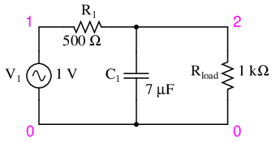
Capacitive low-pass filter.
The capacitor's impedance decreases with increasing frequency. This low impedance in parallel with the load resistance tends to short out high-frequency signals, dropping most of the voltage across series resistor R1. (Figure below)
capacitive lowpass filter v1 1 0 ac 1 sin r1 1 2 500 c1 2 0 7u rload 2 0 1k .ac lin 20 30 150 .plot ac v(2) .end
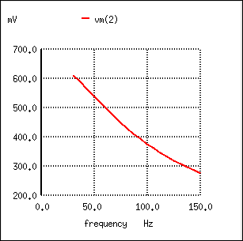
The response of a capacitive low-pass filter falls off with increasing frequency.
The inductive low-pass filter is the pinnacle of simplicity, with only one component comprising the filter. The capacitive version of this filter is not that much more complex, with only a resistor and capacitor needed for operation. However, despite their increased complexity, capacitive filter designs are generally preferred over inductive because capacitors tend to be “purer” reactive components than inductors and therefore are more predictable in their behavior. By “pure” I mean that capacitors exhibit little resistive effects than inductors, making them almost 100% reactive. Inductors, on the other hand, typically exhibit significant dissipative (resistor-like) effects, both in the long lengths of wire used to make them, and in the magnetic losses of the core material. Capacitors also tend to participate less in “coupling” effects with other components (generate and/or receive interference from other components via mutual electric or magnetic fields) than inductors, and are less expensive.
However, the inductive low-pass filter is often preferred in AC-DC power supplies to filter out the AC “ripple” waveform created when AC is converted (rectified) into DC, passing only the pure DC component. The primary reason for this is the requirement of low filter resistance for the output of such a power supply. A capacitive low-pass filter requires an extra resistance in series with the source, whereas the inductive low-pass filter does not. In the design of a high-current circuit like a DC power supply where additional series resistance is undesirable, the inductive low-pass filter is the better design choice. On the other hand, if low weight and compact size are higher priorities than low internal supply resistance in a power supply design, the capacitive low-pass filter might make more sense.
All low-pass filters are rated at a certain cutoff frequency. That is, the frequency above which the output voltage falls below 70.7% of the input voltage. This cutoff percentage of 70.7 is not really arbitrary, all though it may seem so at first glance. In a simple capacitive/resistive low-pass filter, it is the frequency at which capacitive reactance in ohms equals resistance in ohms. In a simple capacitive low-pass filter (one resistor, one capacitor), the cutoff frequency is given as:
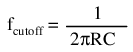
Inserting the values of R and C from the last SPICE simulation into this formula, we arrive at a cutoff frequency of 45.473 Hz. However, when we look at the plot generated by the SPICE simulation, we see the load voltage well below 70.7% of the source voltage (1 volt) even at a frequency as low as 30 Hz, below the calculated cutoff point. What's wrong? The problem here is that the load resistance of 1 kΩ affects the frequency response of the filter, skewing it down from what the formula told us it would be. Without that load resistance in place, SPICE produces a Bode plot whose numbers make more sense: (Figure below)
capacitive lowpass filter v1 1 0 ac 1 sin r1 1 2 500 c1 2 0 7u * note: no load resistor! .ac lin 20 40 50 .plot ac v(2) .end
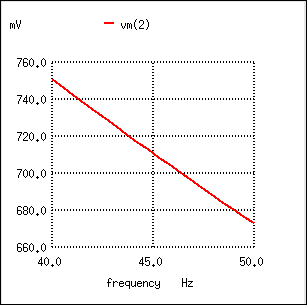
For the capacitive low-pass filter with R = 500 Ω and C = 7 µF, the Output should be 70.7% at 45.473 Hz.
fcutoff = 1/(2πRC) = 1/(2π(500 Ω)(7 µF)) = 45.473 Hz
When dealing with filter circuits, it is always important to note that the response of the filter depends on the filter's component values and the impedance of the load. If a cutoff frequency equation fails to give consideration to load impedance, it assumes no load and will fail to give accurate results for a real-life filter conducting power to a load.
One frequent application of the capacitive low-pass filter principle is in the design of circuits having components or sections sensitive to electrical “noise.” As mentioned at the beginning of the last chapter, sometimes AC signals can “couple” from one circuit to another via capacitance (Cstray) and/or mutual inductance (Mstray) between the two sets of conductors. A prime example of this is unwanted AC signals (“noise”) becoming impressed on DC power lines supplying sensitive circuits: (Figure below)
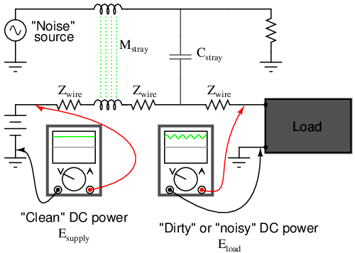
Noise is coupled by stray capacitance and mutual inductance into “clean” DC power.
The oscilloscope-meter on the left shows the “clean” power from the DC voltage source. After coupling with the AC noise source via stray mutual inductance and stray capacitance, though, the voltage as measured at the load terminals is now a mix of AC and DC, the AC being unwanted. Normally, one would expect Eload to be precisely identical to Esource, because the uninterrupted conductors connecting them should make the two sets of points electrically common. However, power conductor impedance allows the two voltages to differ, which means the noise magnitude can vary at different points in the DC system.
If we wish to prevent such “noise” from reaching the DC load, all we need to do is connect a low-pass filter near the load to block any coupled signals. In its simplest form, this is nothing more than a capacitor connected directly across the power terminals of the load, the capacitor behaving as a very low impedance to any AC noise, and shorting it out. Such a capacitor is called a decoupling capacitor: (Figure below)
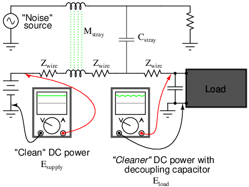
Decoupling capacitor, applied to load, filters noise from DC power supply.
A cursory glance at a crowded printed-circuit board (PCB) will typically reveal decoupling capacitors scattered throughout, usually located as close as possible to the sensitive DC loads. Capacitor size is usually 0.1 µF or more, a minimum amount of capacitance needed to produce a low enough impedance to short out any noise. Greater capacitance will do a better job at filtering noise, but size and economics limit decoupling capacitors to meager values.
A high-pass filter's task is just the opposite of a low-pass filter: to offer easy passage of a high-frequency signal and difficult passage to a low-frequency signal. As one might expect, the inductive (Figure below) and capacitive (Figure below) versions of the high-pass filter are just the opposite of their respective low-pass filter designs:
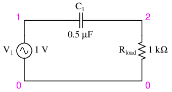
Capacitive high-pass filter.
The capacitor's impedance (Figure above) increases with decreasing frequency. (Figure below) This high impedance in series tends to block low-frequency signals from getting to load.
capacitive highpass filter v1 1 0 ac 1 sin c1 1 2 0.5u rload 2 0 1k .ac lin 20 1 200 .plot ac v(2) .end
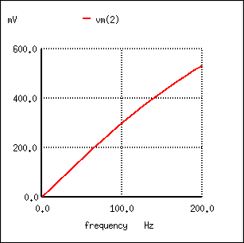
The response of the capacitive high-pass filter increases with frequency.
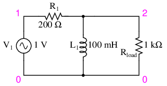
Inductive high-pass filter.
The inductor's impedance (Figure above) decreases with decreasing frequency. (Figure below) This low impedance in parallel tends to short out low-frequency signals from getting to the load resistor. As a consequence, most of the voltage gets dropped across series resistor R1.
inductive highpass filter v1 1 0 ac 1 sin r1 1 2 200 l1 2 0 100m rload 2 0 1k .ac lin 20 1 200 .plot ac v(2) .end
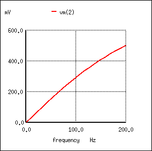
The response of the inductive high-pass filter increases with frequency.
This time, the capacitive design is the simplest, requiring only one component above and beyond the load. And, again, the reactive purity of capacitors over inductors tends to favor their use in filter design, especially with high-pass filters where high frequencies commonly cause inductors to behave strangely due to the skin effect and electromagnetic core losses.
As with low-pass filters, high-pass filters have a rated cutoff frequency, above which the output voltage increases above 70.7% of the input voltage. Just as in the case of the capacitive low-pass filter circuit, the capacitive high-pass filter's cutoff frequency can be found with the same formula:
In the example circuit, there is no resistance other than the load resistor, so that is the value for R in the formula.
Using a stereo system as a practical example, a capacitor connected in series with the tweeter (treble) speaker will serve as a high-pass filter, imposing a high impedance to low-frequency bass signals, thereby preventing that power from being wasted on a speaker inefficient for reproducing such sounds. In like fashion, an inductor connected in series with the woofer (bass) speaker will serve as a low-pass filter for the low frequencies that particular speaker is designed to reproduce. In this simple example circuit, the midrange speaker is subjected to the full spectrum of frequencies from the stereo's output. More elaborate filter networks are sometimes used, but this should give you the general idea. Also bear in mind that I'm only showing you one channel (either left or right) on this stereo system. A real stereo would have six speakers: 2 woofers, 2 midranges, and 2 tweeters.
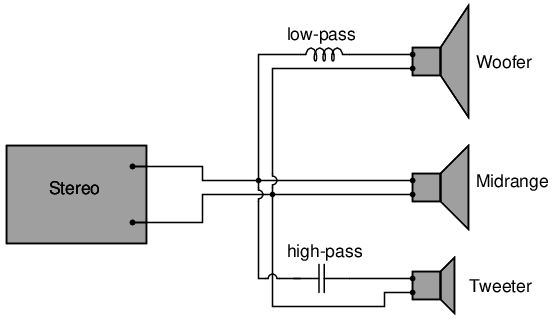
High-pass filter routes high frequencies to tweeter, while low-pass filter routes lows to woofer.
For better performance yet, we might like to have some kind of filter circuit capable of passing frequencies that are between low (bass) and high (treble) to the midrange speaker so that none of the low- or high-frequency signal power is wasted on a speaker incapable of efficiently reproducing those sounds. What we would be looking for is called a band-pass filter, which is the topic of the next section.
There are applications where a particular band, or spread, or frequencies need to be filtered from a wider range of mixed signals. Filter circuits can be designed to accomplish this task by combining the properties of low-pass and high-pass into a single filter. The result is called a band-pass filter. Creating a bandpass filter from a low-pass and high-pass filter can be illustrated using block diagrams: (Figure below)
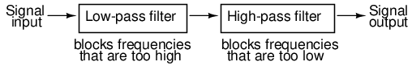
System level block diagram of a band-pass filter.
What emerges from the series combination of these two filter circuits is a circuit that will only allow passage of those frequencies that are neither too high nor too low. Using real components, here is what a typical schematic might look like Figure below. The response of the band-pass filter is shown in (Figure below)
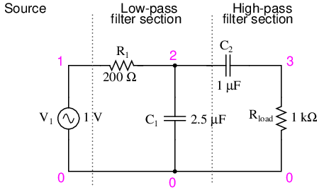
Capacitive band-pass filter.
capacitive bandpass filter v1 1 0 ac 1 sin r1 1 2 200 c1 2 0 2.5u c2 2 3 1u rload 3 0 1k .ac lin 20 100 500 .plot ac v(3) .end
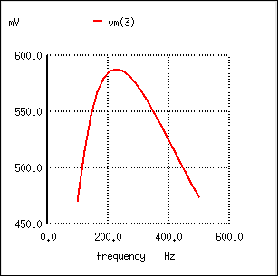
The response of a capacitive bandpass filter peaks within a narrow frequency range.
Band-pass filters can also be constructed using inductors, but as mentioned before, the reactive “purity” of capacitors gives them a design advantage. If we were to design a bandpass filter using inductors, it might look something like Figure below.
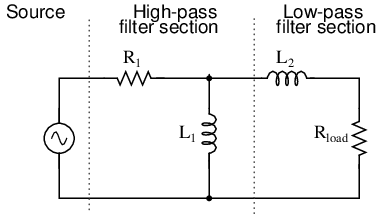
Inductive band-pass filter.
The fact that the high-pass section comes “first” in this design instead of the low-pass section makes no difference in its overall operation. It will still filter out all frequencies too high or too low.
While the general idea of combining low-pass and high-pass filters together to make a bandpass filter is sound, it is not without certain limitations. Because this type of band-pass filter works by relying on either section to block unwanted frequencies, it can be difficult to design such a filter to allow unhindered passage within the desired frequency range. Both the low-pass and high-pass sections will always be blocking signals to some extent, and their combined effort makes for an attenuated (reduced amplitude) signal at best, even at the peak of the “pass-band” frequency range. Notice the curve peak on the previous SPICE analysis: the load voltage of this filter never rises above 0.59 volts, although the source voltage is a full volt. This signal attenuation becomes more pronounced if the filter is designed to be more selective (steeper curve, narrower band of passable frequencies).
There are other methods to achieve band-pass operation without sacrificing signal strength within the pass-band. We will discuss those methods a little later in this chapter.
Also called band-elimination, band-reject, or notch filters, this kind of filter passes all frequencies above and below a particular range set by the component values. Not surprisingly, it can be made out of a low-pass and a high-pass filter, just like the band-pass design, except that this time we connect the two filter sections in parallel with each other instead of in series. (Figure below)
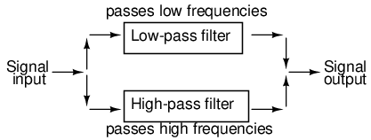
System level block diagram of a band-stop filter.
Constructed using two capacitive filter sections, it looks something like (Figure below).
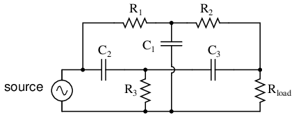
“Twin-T” band-stop filter.
The low-pass filter section is comprised of R1, R2, and C1 in a “T” configuration. The high-pass filter section is comprised of C2, C3, and R3 in a “T” configuration as well. Together, this arrangement is commonly known as a “Twin-T” filter, giving sharp response when the component values are chosen in the following ratios:
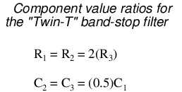
Given these component ratios, the frequency of maximum rejection (the “notch frequency”) can be calculated as follows:
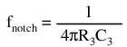
The impressive band-stopping ability of this filter is illustrated by the following SPICE analysis: (Figure below)
twin-t bandstop filter v1 1 0 ac 1 sin r1 1 2 200 c1 2 0 2u r2 2 3 200 c2 1 4 1u r3 4 0 100 c3 4 3 1u rload 3 0 1k .ac lin 20 200 1.5k .plot ac v(3) .end
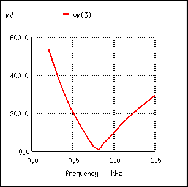
Response of “twin-T” band-stop filter.
So far, the filter designs we've concentrated on have employed either capacitors or inductors, but never both at the same time. We should know by now that combinations of L and C will tend to resonate, and this property can be exploited in designing band-pass and band-stop filter circuits.
Series LC circuits give minimum impedance at resonance, while parallel LC (“tank”) circuits give maximum impedance at their resonant frequency. Knowing this, we have two basic strategies for designing either band-pass or band-stop filters.
For band-pass filters, the two basic resonant strategies are this: series LC to pass a signal (Figure below), or parallel LC (Figure below) to short a signal. The two schemes will be contrasted and simulated here:
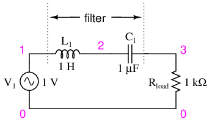
Series resonant LC band-pass filter.
Series LC components pass signal at resonance, and block signals of any other frequencies from getting to the load. (Figure below)
series resonant bandpass filter v1 1 0 ac 1 sin l1 1 2 1 c1 2 3 1u rload 3 0 1k .ac lin 20 50 250 .plot ac v(3) .end
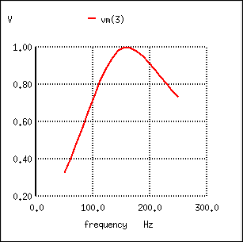
Series resonant band-pass filter: voltage peaks at resonant frequency of 159.15 Hz.
A couple of points to note: see how there is virtually no signal attenuation within the “pass band” (the range of frequencies near the load voltage peak), unlike the band-pass filters made from capacitors or inductors alone. Also, since this filter works on the principle of series LC resonance, the resonant frequency of which is unaffected by circuit resistance, the value of the load resistor will not skew the peak frequency. However, different values for the load resistor will change the “steepness” of the Bode plot (the “selectivity” of the filter).
The other basic style of resonant band-pass filters employs a tank circuit (parallel LC combination) to short out signals too high or too low in frequency from getting to the load: (Figure below)
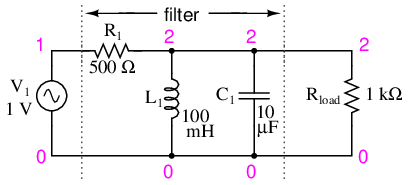
Parallel resonant band-pass filter.
The tank circuit will have a lot of impedance at resonance, allowing the signal to get to the load with minimal attenuation. Under or over resonant frequency, however, the tank circuit will have a low impedance, shorting out the signal and dropping most of it across series resistor R1. (Figure below)
parallel resonant bandpass filter v1 1 0 ac 1 sin r1 1 2 500 l1 2 0 100m c1 2 0 10u rload 2 0 1k .ac lin 20 50 250 .plot ac v(2) .end
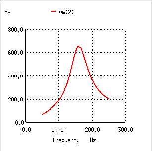
Parallel resonant filter: voltage peaks a resonant frequency of 159.15 Hz.
Just like the low-pass and high-pass filter designs relying on a series resistance and a parallel “shorting” component to attenuate unwanted frequencies, this resonant circuit can never provide full input (source) voltage to the load. That series resistance will always be dropping some amount of voltage so long as there is a load resistance connected to the output of the filter.
It should be noted that this form of band-pass filter circuit is very popular in analog radio tuning circuitry, for selecting a particular radio frequency from the multitudes of frequencies available from the antenna. In most analog radio tuner circuits, the rotating dial for station selection moves a variable capacitor in a tank circuit.
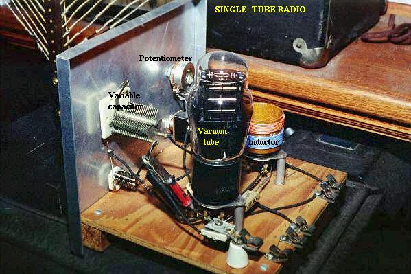
Variable capacitor tunes radio receiver tank circuit to select one out of many broadcast stations.
The variable capacitor and air-core inductor shown in Figure above photograph of a simple radio comprise the main elements in the tank circuit filter used to discriminate one radio station's signal from another.
Just as we can use series and parallel LC resonant circuits to pass only those frequencies within a certain range, we can also use them to block frequencies within a certain range, creating a band-stop filter. Again, we have two major strategies to follow in doing this, to use either series or parallel resonance. First, we'll look at the series variety: (Figure below)
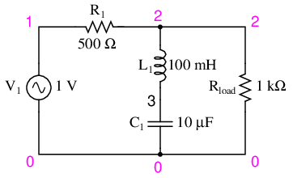
Series resonant band-stop filter.
When the series LC combination reaches resonance, its very low impedance shorts out the signal, dropping it across resistor R1 and preventing its passage on to the load. (Figure below)
series resonant bandstop filter v1 1 0 ac 1 sin r1 1 2 500 l1 2 3 100m c1 3 0 10u rload 2 0 1k .ac lin 20 70 230 .plot ac v(2) .end
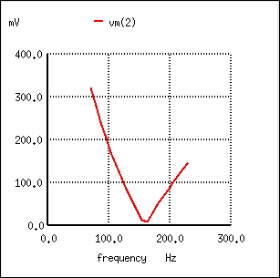
Series resonant band-stop filter: Notch frequency = LC resonant frequency (159.15 Hz).
Next, we will examine the parallel resonant band-stop filter: (Figure below)
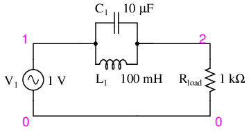
Parallel resonant band-stop filter.
The parallel LC components present a high impedance at resonant frequency, thereby blocking the signal from the load at that frequency. Conversely, it passes signals to the load at any other frequencies. (Figure below)
parallel resonant bandstop filter v1 1 0 ac 1 sin l1 1 2 100m c1 1 2 10u rload 2 0 1k .ac lin 20 100 200 .plot ac v(2) .end
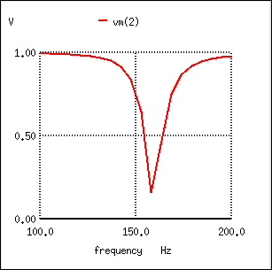
Parallel resonant band-stop filter: Notch frequency = LC resonant frequency (159.15 Hz).
Once again, notice how the absence of a series resistor makes for minimum attenuation for all the desired (passed) signals. The amplitude at the notch frequency, on the other hand, is very low. In other words, this is a very “selective” filter.
In all these resonant filter designs, the selectivity depends greatly upon the “purity” of the inductance and capacitance used. If there is any stray resistance (especially likely in the inductor), this will diminish the filter's ability to finely discriminate frequencies, as well as introduce antiresonant effects that will skew the peak/notch frequency.
A word of caution to those designing low-pass and high-pass filters is in order at this point. After assessing the standard RC and LR low-pass and high-pass filter designs, it might occur to a student that a better, more effective design of low-pass or high-pass filter might be realized by combining capacitive and inductive elements together like Figure below.
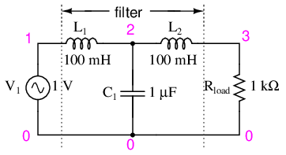
Capacitive Inductive low-pass filter.
The inductors should block any high frequencies, while the capacitor should short out any high frequencies as well, both working together to allow only low frequency signals to reach the load.
At first, this seems to be a good strategy, and eliminates the need for a series resistance. However, the more insightful student will recognize that any combination of capacitors and inductors together in a circuit is likely to cause resonant effects to happen at a certain frequency. Resonance, as we have seen before, can cause strange things to happen. Let's plot a SPICE analysis and see what happens over a wide frequency range: (Figure below)
lc lowpass filter v1 1 0 ac 1 sin l1 1 2 100m c1 2 0 1u l2 2 3 100m rload 3 0 1k .ac lin 20 100 1k .plot ac v(3) .end
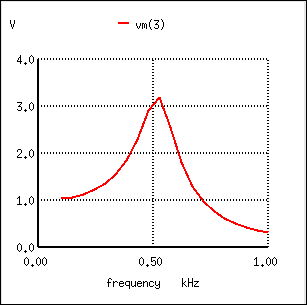
Unexpected response of L-C low-pass filter.
What was supposed to be a low-pass filter turns out to be a band-pass filter with a peak somewhere around 526 Hz! The capacitance and inductance in this filter circuit are attaining resonance at that point, creating a large voltage drop around C1, which is seen at the load, regardless of L2's attenuating influence. The output voltage to the load at this point actually exceeds the input (source) voltage! A little more reflection reveals that if L1 and C2 are at resonance, they will impose a very heavy (very low impedance) load on the AC source, which might not be good either. We'll run the same analysis again, only this time plotting C1's voltage, vm(2) in Figure below, and the source current, I(v1), along with load voltage, vm(3):
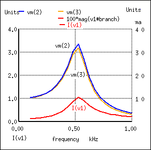
Current inceases at the unwanted resonance of the L-C low-pass filter.
Sure enough, we see the voltage across C1 and the source current spiking to a high point at the same frequency where the load voltage is maximum. If we were expecting this filter to provide a simple low-pass function, we might be disappointed by the results.
The problem is that an L-C filter has an input impedance and an output impedance which must be matched. The voltage source impedance must match the input impedance of the filter, and the filter output impedance must be matched by “rload” for a flat response. The input and output impedance is given by the square root of (L/C).
Z = (L/C)1/2
Taking the component values from (Figure below), we can find the impedance of the filter, and the required , Rg and Rload to match it.
For L= 100 mH, C= 1µF Z = (L/C)1/2=((100 mH)/(1 µF))1/2 = 316 Ω
In Figure below we have added Rg = 316 Ω to the generator, and changed the load Rload from 1000 Ω to 316 Ω. Note that if we needed to drive a 1000 Ω load, the L/C ratio could have been adjusted to match that resistance.
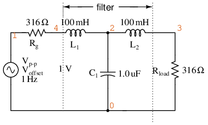
Circuit of source and load matched L-C low-pass filter.
LC matched lowpass filter V1 1 0 ac 1 SIN Rg 1 4 316 L1 4 2 100m C1 2 0 1.0u L2 2 3 100m Rload 3 0 316 .ac lin 20 100 1k .plot ac v(3) .end
Figure below shows the “flat” response of the L-C low pass filter when the source and load impedance match the filter input and output impedances.
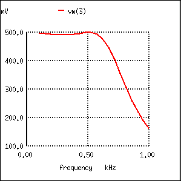
The response of impedance matched L-C low-pass filter is nearly flat up to the cut-off frequency.
The point to make in comparing the response of the unmatched filter (Figure above) to the matched filter (Figure above) is that variable load on the filter produces a considerable change in voltage. This property is directly applicable to L-C filtered power supplies– the regulation is poor. The power supply voltage changes with a change in load. This is undesirable.
This poor load regulation can be mitigated by a swinging choke. This is a choke, inductor, designed to saturate when a large DC current passes through it. By saturate, we mean that the DC current creates a “too” high level of flux in the magnetic core, so that the AC component of current cannot vary the flux. Since induction is proportional to dΦ/dt, the inductance is decreased by the heavy DC current. The decrease in inductance decreases reactance XL. Decreasing reactance, reduces the voltage drop across the inductor; thus, increasing the voltage at the filter output. This improves the voltage regulation with respect to variable loads.
Despite the unintended resonance, low-pass filters made up of capacitors and inductors are frequently used as final stages in AC/DC power supplies to filter the unwanted AC “ripple” voltage out of the DC converted from AC. Why is this, if this particular filter design possesses a potentially troublesome resonant point?
The answer lies in the selection of filter component sizes and the frequencies encountered from an AC/DC converter (rectifier). What we're trying to do in an AC/DC power supply filter is separate DC voltage from a small amount of relatively high-frequency AC voltage. The filter inductors and capacitors are generally quite large (several Henrys for the inductors and thousands of µF for the capacitors is typical), making the filter's resonant frequency very, very low. DC of course, has a “frequency” of zero, so there's no way it can make an LC circuit resonate. The ripple voltage, on the other hand, is a non-sinusoidal AC voltage consisting of a fundamental frequency at least twice the frequency of the converted AC voltage, with harmonics many times that in addition. For plug-in-the-wall power supplies running on 60 Hz AC power (60 Hz United States; 50 Hz in Europe), the lowest frequency the filter will ever see is 120 Hz (100 Hz in Europe), which is well above its resonant point. Therefore, the potentially troublesome resonant point in a such a filter is completely avoided.
The following SPICE analysis calculates the voltage output (AC and DC) for such a filter, with series DC and AC (120 Hz) voltage sources providing a rough approximation of the mixed-frequency output of an AC/DC converter.
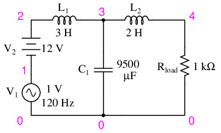
AC/DC power suppply filter provides “ripple free” DC power.
ac/dc power supply filter v1 1 0 ac 1 sin v2 2 1 dc l1 2 3 3 c1 3 0 9500u l2 3 4 2 rload 4 0 1k .dc v2 12 12 1 .ac lin 1 120 120 .print dc v(4) .print ac v(4) .end
v2 v(4) 1.200E+01 1.200E+01 DC voltage at load = 12 volts freq v(4) 1.200E+02 3.412E-05 AC voltage at load = 34.12 microvolts
With a full 12 volts DC at the load and only 34.12 µV of AC left from the 1 volt AC source imposed across the load, this circuit design proves itself to be a very effective power supply filter.
The lesson learned here about resonant effects also applies to the design of high-pass filters using both capacitors and inductors. So long as the desired and undesired frequencies are well to either side of the resonant point, the filter will work OK. But if any signal of significant magnitude close to the resonant frequency is applied to the input of the filter, strange things will happen!

As lengthy as this chapter has been up to this point, it only begins to scratch the surface of filter design. A quick perusal of any advanced filter design textbook is sufficient to prove my point. The mathematics involved with component selection and frequency response prediction is daunting to say the least -- well beyond the scope of the beginning electronics student. It has been my intent here to present the basic principles of filter design with as little math as possible, leaning on the power of the SPICE circuit analysis program to explore filter performance. The benefit of such computer simulation software cannot be understated, for the beginning student or for the working engineer.
Circuit simulation software empowers the student to explore circuit designs far beyond the reach of their math skills. With the ability to generate Bode plots and precise figures, an intuitive understanding of circuit concepts can be attained, which is something often lost when a student is burdened with the task of solving lengthy equations by hand. If you are not familiar with the use of SPICE or other circuit simulation programs, take the time to become so! It will be of great benefit to your study. To see SPICE analyses presented in this book is an aid to understanding circuits, but to actually set up and analyze your own circuit simulations is a much more engaging and worthwhile endeavor as a student.
Contributors to this chapter are listed in chronological order of their contributions, from most recent to first. See Appendix 2 (Contributor List) for dates and contact information.
Jason Starck (June 2000): HTML document formatting, which led to a much better-looking second edition.
Lessons In Electric Circuits copyright (C) 2000-2023 Tony R. Kuphaldt, under the terms and conditions of the CC BY License.
{kind=link}
{kind=link}
{kind=link}
{kind=link}
{kind=link}
{kind=link}
{kind=link}
{kind=link}
{kind=link}
{kind=link}
{kind=link}
{kind=link}
{kind=link}
{kind=link}
{kind=link}
{kind=link}
{kind=link}
{kind=link}
{kind=link}
{kind=link}
{kind=link}
{kind=link}
{kind=link}
{kind=link}
{kind=link}
{kind=link}
{kind=link}
{kind=link}
{kind=link}
{kind=link}
{kind=link}